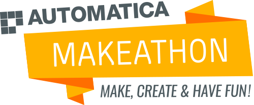

Android App for interaction with human, processing speech input data to Bing Speech API and then to Microsoft LUIS to enable interaction with a 3D-printed robot through mapping of entity keywords. It was created during a Makeathon in Munich at 17./18 June 2016
